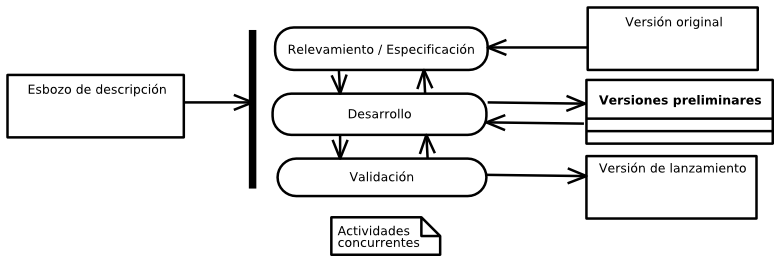

Este capitulo detalla el marco conceptual y la metodología de desarrollo adoptada. Esta decisión ha sido rectora de subsecuentes decisiones de diseño y, de cierta manera, de la tecnología adoptada para la implementación.
Este proyecto integrador ha sido guiado por un conjunto de preceptos comunes a las metodologías ágiles de desarrollo de software. Sin necesariamente ajustarse a ninguna en particular, se comparte la escala de valoración hecha en Agile Manifiesto [AG-MANIF] que declara:
Estamos descubriendo formas mejores de desarrollar software tanto por nuestra propia experiencia como ayudando a terceros. A través de este trabajo hemos aprendido a valorar:
- Individuos e interacciones sobre procesos y herramientas
- Software funcionando sobre documentación extensiva
- Colaboración con el cliente sobre negociación contractual
- Respuesta ante el cambio sobre seguimiento (estricto) de un plan
Esto es, aunque valoramos los elementos de la derecha, valoramos más los de la izquierda.
Las implementaciones del marco conceptual propuesto por el Manifiesto de desarrollo ágil (como eXtremme Programming o Scrum) están estructuralmente concebidas para el trabajo de un equipo de desarrollo abocado al mismo proyecto. Como el desarrollo del software estuvo a cargo de una sola persona (con la colaboración y revisión de los directores) no se ajustó a un método estrictamente definido para un equipo como los mencionados.
Sin embargo, muchas ideas propuestas por estos métodos han sido aplicadas, concibiendo un desarrollo evolutivo con énfasis en la adaptabilidad de los requerimientos.
Algunas de las técnicas y procesos ágiles involucrados en este desarrollo han sido la utilización de un lenguaje de muy alto nivel (ver Tecnologías adoptadas ), la implementación de pruebas automatizadas, la utilización de bibliotecas probas para la implementación de aspectos específicos de la solución, entre otras.
Según [Sommerville2004], el desarrollo evolutivo se basa en la idea de una implementación inicial, exponiéndola a los comentarios del comitente o los usuarios, y refinándola a través de diferentes versiones preliminares (versiones beta) hasta obtener una versión que satisfaga el conjunto de requerimientos planteado.
Esquema conceptual del desarrollo evolutivo
Las actividades de especificación, desarrollo y validación se entrelazan en vez de separarse, con una rápida y constante retroalimentación entre estas.
Existen dos grandes tipos de desarrollos evolutivos:
Basado en los postulados de [AG-MANIF] durante el desarrollo se ha hecho hincapié en un modelado y documentación orientados a favorecer la comunicación por sobre el apego estricto y exhaustivo al lenguaje UML y la documentación formal, intentando que el resultado sea útil para el comitente, evaluadores y futuros desarrolladores del proyecto.
Según afirma Terry Quatrani, evangelizadora de las metodologías ágiles en IBM, en [Quatrani2010] :
Aunque sigas un proceso ágil, estarás realizando cierto grado de modelado – sólo que no lo realizarás tanto como si utilizaras un proceso tradicional. La falta de formalidad en el modelado ágil no significa que no estás modelando, sino que te pones el foco en los beneficios de este sin las desventajas y confusiones de documentos extraños y burocráticos.
Por su parte, Robert Martin sostiene en [Martin2006] que el modelado basado en UML en el desarrollo ágil es útil como instrumento de comunicación, pero su detalle no aporta valor significativo:
No gastes mucho tiempo en esta tarea, no necesitas tanto detalle. Los modelos y los planos son necesarios en la arquitectura y la construcción civil porque es caro construir una casa para demostrar que su diseño funciona. El software no es así – puedes validar tu idea con sólo codificarla, en igual tiempo que el que insume hacer un modelo UML que nada prueba por sí mismo.
Aun más escéptico, Alans Stevens, reconocido ingeniero en software [1] y conferencista, opina en [Stevens2006] :
No uso UML y noto que ninguno de mis colegas lo usa. Tengo sensaciones mezcladas acerca de su necesidad. Parece perfectamente razonable que debamos acordar como industria un conjunto de símbolos comunes para representar la programación orientada a objetos, pero UML tiene la típica apariencia de “diseñado por un comité”.
(...) El aspecto más crítico en un diseño inicial, en mi experiencia, es la interfaz entre la UI y el modelo de objetos. Lamentablemente UML no aborda este problema y en cambio parece obsesionado por las minucias en una parodia de distracción académica.
| [1] | Premio Most Valuable Professional de Microsoft por sus aportes a la comunidad de usuarios del lenguaje C#. http://bit.ly/as_mvp |